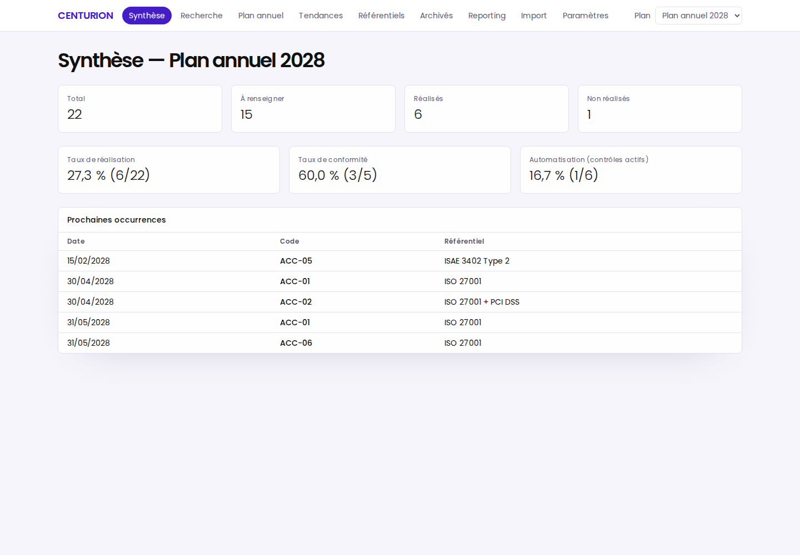
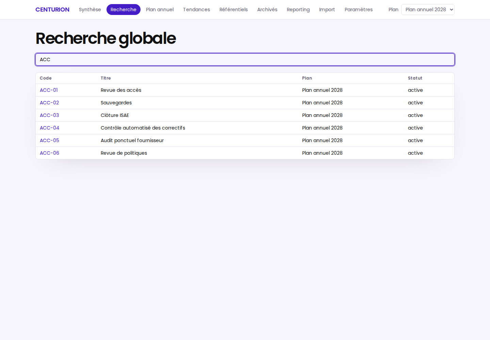
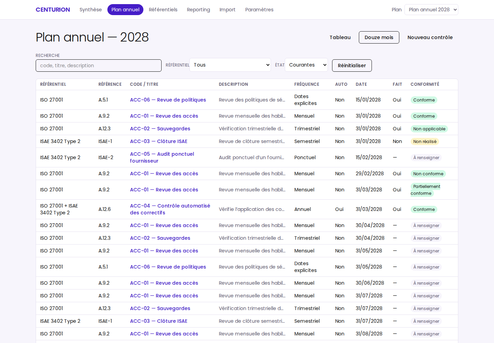
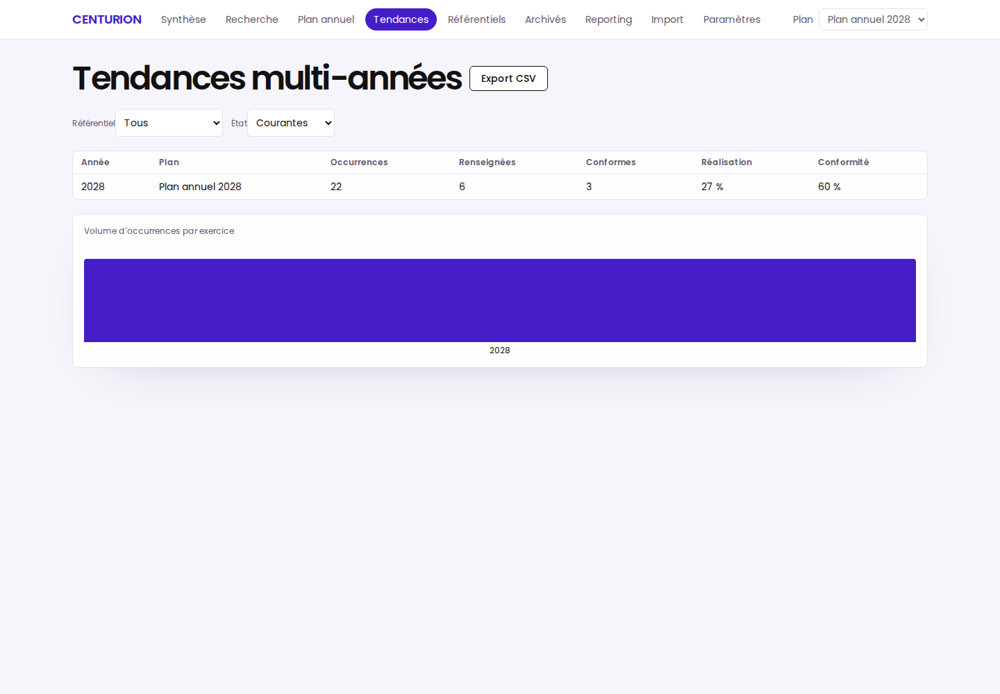
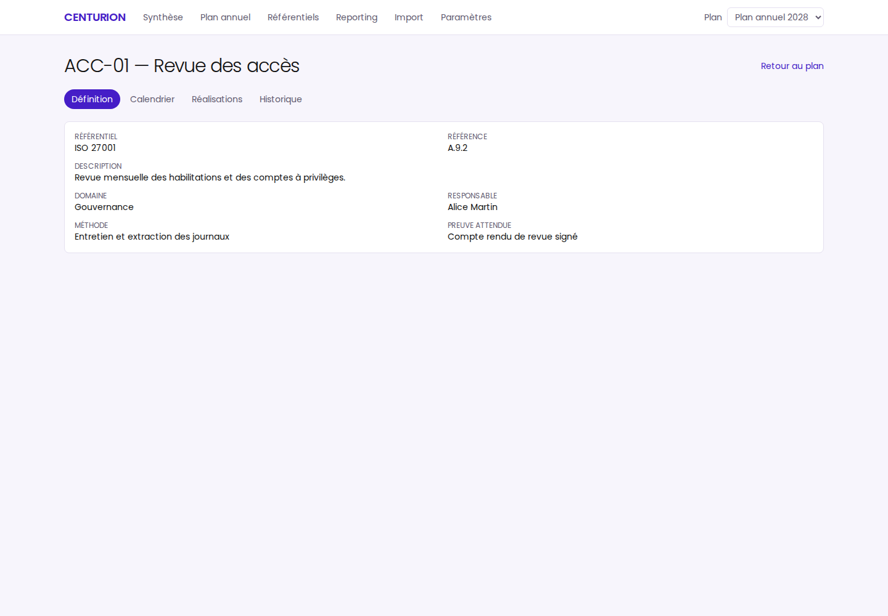
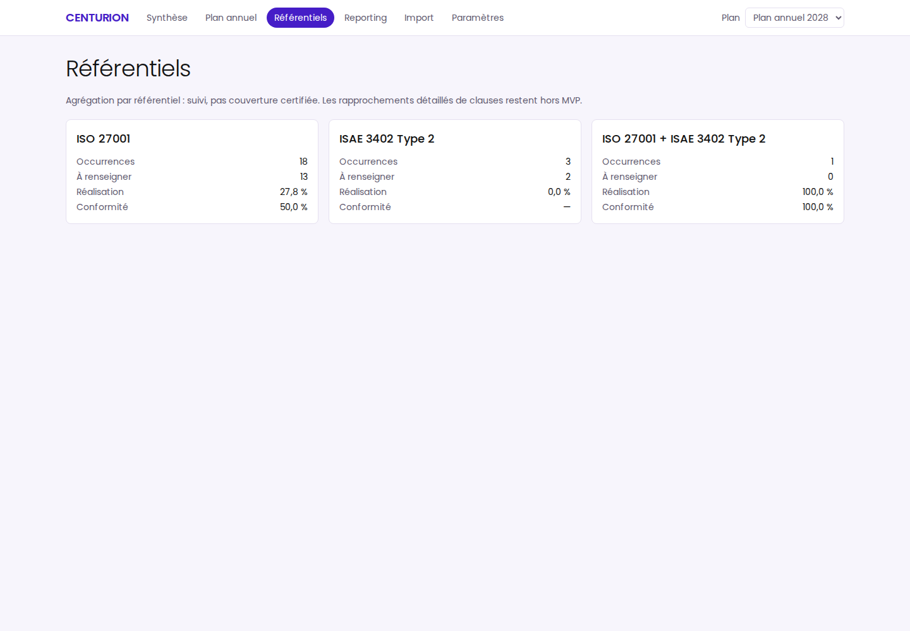
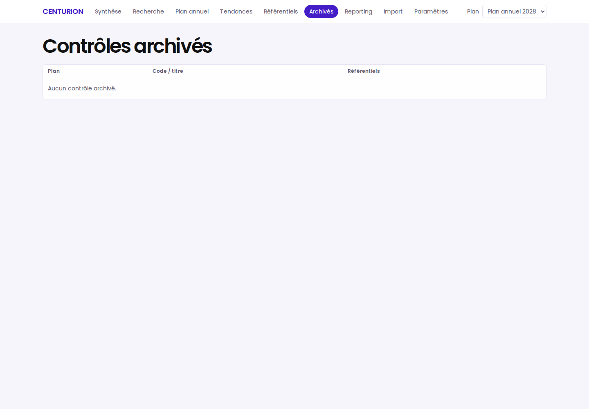
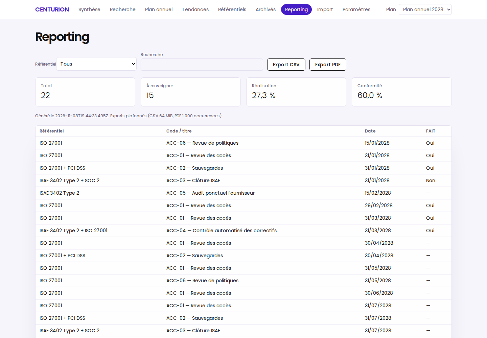
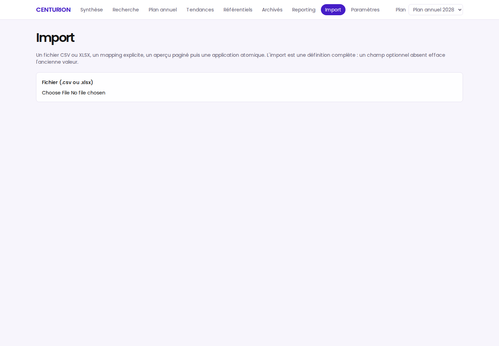
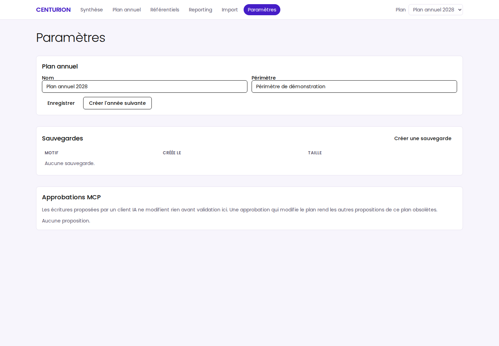

Notice d'utilisation
Suivez votre plan annuel de contrôles cyber & IT, année après année.
CENTURION est une application locale et mono-utilisateur : occurrences récurrentes, réalisations auditées, justificatifs, tendances multi-années, exports, sauvegardes — et un serveur MCP pour interroger vos données depuis un assistant IA. Aucune donnée ne quitte la machine, sauf via le serveur MCP.

1Installation et lancement
Prérequis : Node.js 24 LTS (>=24 <25) et npm 11. Aucun accès réseau requis au runtime.
npm ci
npm run build
npm run start # UI + API sur http://127.0.0.1:4317Ouvrez http://127.0.0.1:4317. L'application n'écoute que sur 127.0.0.1 et un seul
processus possède les données (verrou d'instance). Les données vivent dans CENTURION_DATA_DIR ou, par défaut,
dans le répertoire utilisateur (~/.local/share/centurion, %LOCALAPPDATA%/Centurion, ~/Library/Application Support/Centurion).
Démo reproductible
npm run dev:demo # données fictives, horloge fixe 2028-04-15
npm run demo:reset -- --confirm # retour à l'état déterministe (data/demo uniquement)2Tour des écrans
Toutes les captures sont des écrans réels de l'application, prises sur le jeu de démonstration.
Recherche
Recherche globale sur les contrôles (code, titre, description), résultats plafonnés à 50, archivés inclus.

Plan annuel
Tableau des occurrences avec filtres (texte, référentiel, état), pagination et vue « Douze mois ». Nouveau contrôle ouvre la fiche de création.

Tendances
Un point par exercice (occurrences, réalisation, conformité) avec les mêmes filtres, tableau + graphique, export CSV.

Fiche contrôle
Définition (référentiels, clauses, responsables), calendrier et aperçu de changement de planning, réalisations avec justificatifs, historique d'audit.

Référentiels, Archivés, Reporting, Import, Paramètres
Référentiels
Agrégation par famille (ISO 27001, ISAE 3402 Type 2, combinés) : un suivi, pas une couverture certifiée.
Archivés
Contrôles archivés de tous les plans, avec leur exercice d'origine.
Reporting
Rapport filtrable, exports CSV (occurrences filtrées) et PDF (rapport paginé, borné à 1 000 lignes).
Import
CSV/XLSX revu : upload, mapping explicite, aperçu paginé, application atomique.
Paramètres
Plan, année suivante, sauvegardes/restauration, permissions MCP et approbations.





3Workflows du quotidien
- Créer un contrôle — Plan annuel → Nouveau contrôle : code, titre, description, référentiels, fréquence (mensuel, trimestriel, semestriel, annuel, dates explicites) et date d'ancrage. Les occurrences de l'année sont générées automatiquement.
- Renseigner une réalisation — cliquez sur le badge de conformité d'une occurrence : FAIT oui/non, conformité (conforme, partiellement conforme, non conforme, non applicable), date de réalisation (les dates futures sont refusées), commentaire, référence de preuve. Les corrections gardent leur identifiant et sont auditées (avant/après).
- Joindre des justificatifs — fiche contrôle → Réalisations : déposez un fichier PDF, PNG, JPEG ou TXT ≤ 5 MiB. Stocké sous le répertoire de données (hash SHA-256), téléchargeable, supprimable. Non scanné par antivirus.
- Lier des clauses — fiche contrôle → Définition → Clauses : cochez les clauses et enregistrez ; la synthèse et les tendances agrègent alors la couverture par clause (
POST /api/clausespour les créer). - Archiver un contrôle — fiche contrôle → Calendrier : date d'effet puis Archiver. Les occurrences ouvertes à cette date passent « supplantées », les réalisées sont conservées.
- Sauvegarder / restaurer — Paramètres → Sauvegardes : copie SQLite à chaud, rétention 20 automatiques + manuelles, restauration journalisée avec aperçu de 15 minutes.
4Connecter un assistant IA (MCP)
Serveur MCP en stdio, agnostique de l'hôte (OpenCode, Codex, VS Code, Claude Desktop…).
- Démarrez le backend :
npm run start - Configurez l'hôte MCP (ex.
.mcp.json) :
{
"mcpServers": {
"centurion": {
"type": "stdio",
"command": "/chemin/vers/CENTURION/scripts/mcp-stdio.sh",
"env": { "CENTURION_DATA_DIR": "/chemin/vers/CENTURION/data/demo" }
}
}
}Lecture seule par défaut — 10 outils : list_plans, get_plan, list_controls,
get_control, list_occurrences, get_summary, get_trends, list_clauses,
export_controls_csv, generate_report_pdf.
Les écritures (create_control, update_control_metadata, set_occurrence)
exigent le double flag CENTURION_MCP_WRITE=1 (backend et adaptateur) et une approbation
explicite dans l'UI (Paramètres → Approbations MCP). Détails dans docs/MCP.md.
5Sécurité et limites
- Mono-utilisateur, sans compte ni SSO : l'app protège les requêtes du navigateur (Origin, en-tête
X-Centurion-Request, contrôle d'hôte), pas les autres processus du même poste. - Écoute sur
127.0.0.1uniquement ; verrou d'instance exclusif sur les données. - Pas de notion automatique de retard/SLA, pas de chiffrement applicatif, pas d'inviolabilité de l'audit.
- Justificatifs bornés et typés, non scannés par antivirus.
- MCP en stdio uniquement — aucun transport réseau.
6Commandes utiles
npm run check # typecheck + lint + tests (unitaires, intégration, sécurité, MCP)
npm run test:e2e # tests Playwright contre un build de production
npm run diagnose # état rapide des artefacts de build
npm run audit:deps # npm audit (réseau requis)
npm run capture # régénère docs/screenshots/*.png (serveur de démo requis)Version Markdown de cette notice : docs/NOTICE.md.